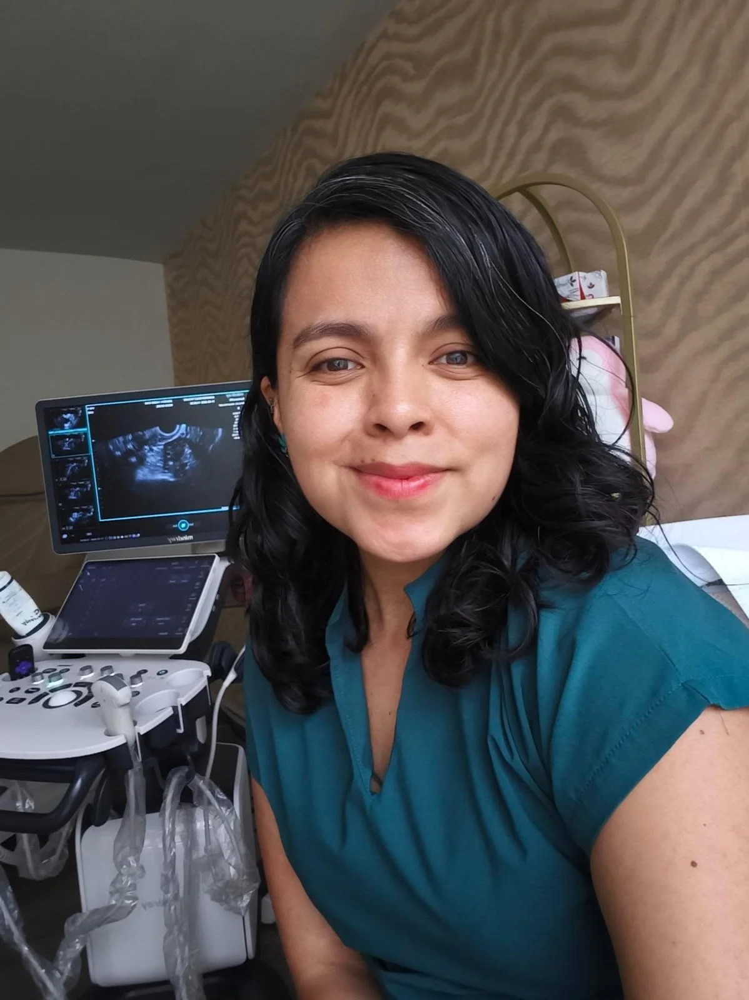
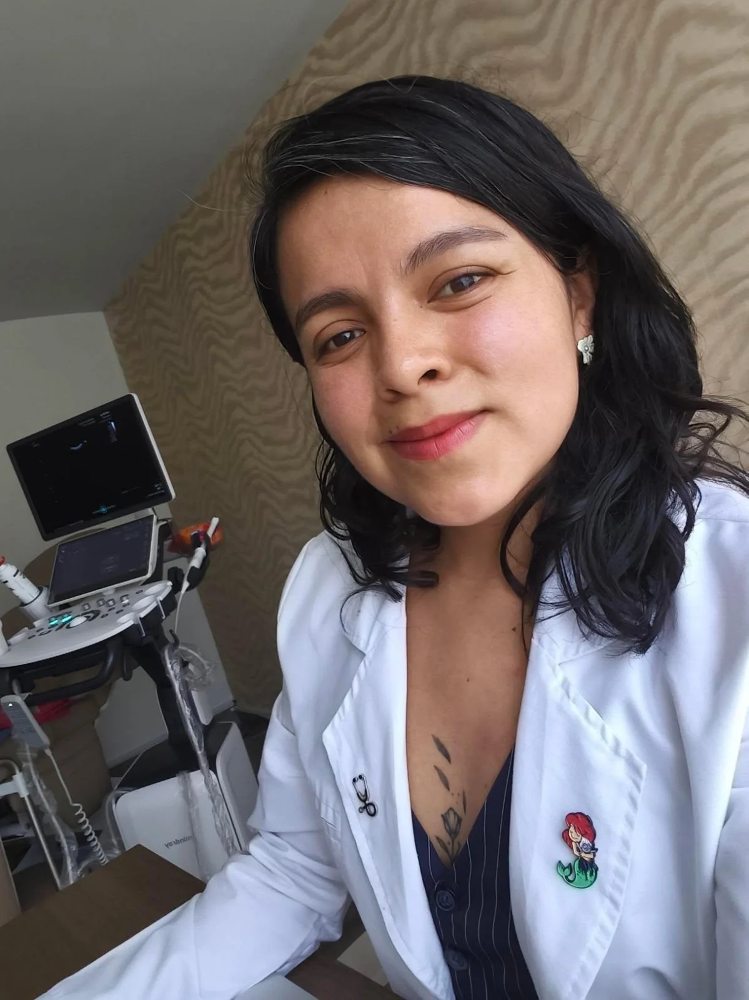
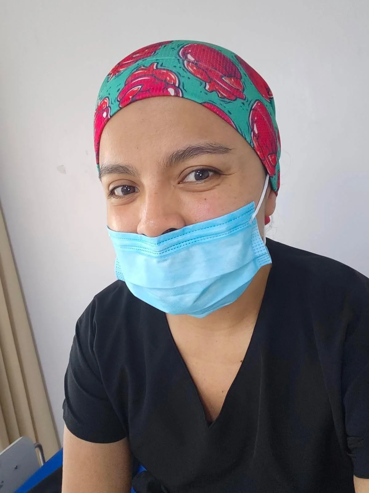
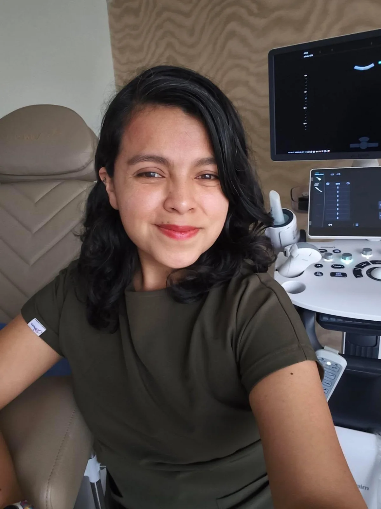

Si cuentas con un reporte de Papanicolaou alterado o requerimiento de valoración por VPH, realizar una colposcopía en Polanco con la Dra. Lidia Chávez te brinda la precisión clínica necesaria.
Ofrecemos diagnóstico de alta definición con colposcopio médico en Aurafem (Polanco / Anzures, CDMX). Agenda tu cita fácil por WhatsApp.

La colposcopía es un estudio ginecológico que permite examinar visualmente y en tiempo real el cuello uterino, la vagina y la vulva mediante un colposcopio con lentes de magnificación que permanece fuera del cuerpo.
Durante la realización de la colposcopía CDMX, la ginecóloga aplica soluciones contrastantes (ácido acético y Lugol) que resaltan áreas con tejido alterado o lesiones por VPH, permitiendo identificar su ubicación exacta.
La colposcopía en Polanco no genera dolor. Al colocarse el espéculo se siente la misma presión suave que en una citología convencional.
Si la Dra. Lidia Chávez observa una zona atípica que requiera confirmación, realiza una toma de biopsia dirigida (muestra milimétrica para patología), donde se percibe un breve cólico similar al dolor menstrual.
Agendas por WhatsApp asegurando acudir fuera de tu ciclo menstrual.
En consultorio analizamos tus citologías o laboratorios previos.
Evaluación colposcópica directa con soluciones de contraste visual.
Explicación inmediata de las imágenes observadas y plan médico.
Está indicada ante un Papanicolaou alterado, diagnóstico de VPH, sangrado poscoital o lesiones visibles.
No es dolorosa. El colposcopio se coloca fuera del cuerpo. La solución contraste genera solo un breve hormigueo temporal.
Únicamente si se observa una zona atípica que requiera análisis en laboratorio patológico.
El Papanicolaou colecta células microscópicas y la colposcopía es la inspección óptica directa del tejido cervical.
Envíanos un mensaje por WhatsApp y coordinaremos tu cita en Aurafem en el horario de tu preferencia.
Conoce de cerca nuestro consultorio en Polanco, equipamiento y el entorno seguro de atención ginecológica.

Diagnóstico en tiempo real ante Papanicolaou alterado
Evaluación de lesiones acetoblancas o por VPH
Toma de biopsia dirigida sin molestias
Explicación médica de las imágenes obtenidasLa Dra. Lidia Chávez brinda atención ginecológica en Polanco, CDMX, con un enfoque profesional, respetuoso y firmemente orientado al bienestar integral de cada paciente.

Atención médica para valoración, orientación y seguimiento de la salud femenina.
Ver servicio →Estudio celular preventivo fundamental para detección oportuna en cuello uterino.
Ver servicio →Monitoreo constante durante el embarazo para la salud materna y del bebé.
Ver servicio →Acompañamiento médico integral y humano en cada trimestre gestacional.
Ver servicio →Diagnóstico, manejo de lesiones, vacunación y valoración experta en VPH.
Ver servicio →Chequeo completo anual enfocado en prevención y resolución de molestias.
Ver servicio →Atención en zona Miguel Hidalgo, cerca de Polanco, con un fácil acceso y conectividad desde Benito Juárez, Cuauhtémoc y zonas aledañas.
Cantú 11, Colonia Anzures, Miguel Hidalgo, 11590 Ciudad de México, CDMX.
La información contenida en esta página web posee fines exclusivamente educativos e informativos y bajo ningún concepto sustituye una valoración médica profesional en consultorio. Para recibir orientación médica adecuada, agenda una consulta formal con la especialista.
Escríbele directamente a la Dra. Lidia Chávez para revisar fechas disponibles, horarios de atención y resolver tus dudas de forma rápida.